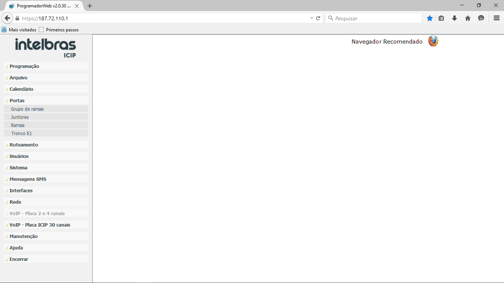
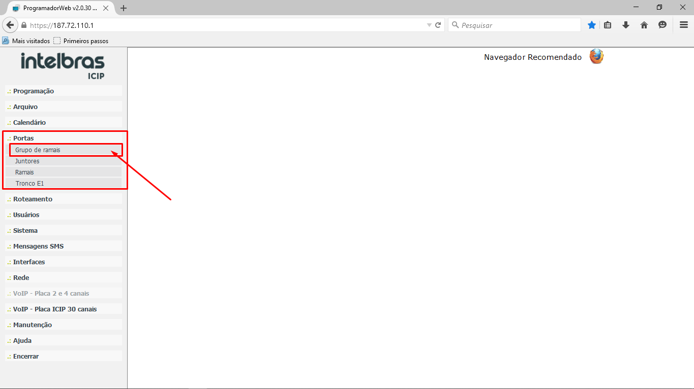
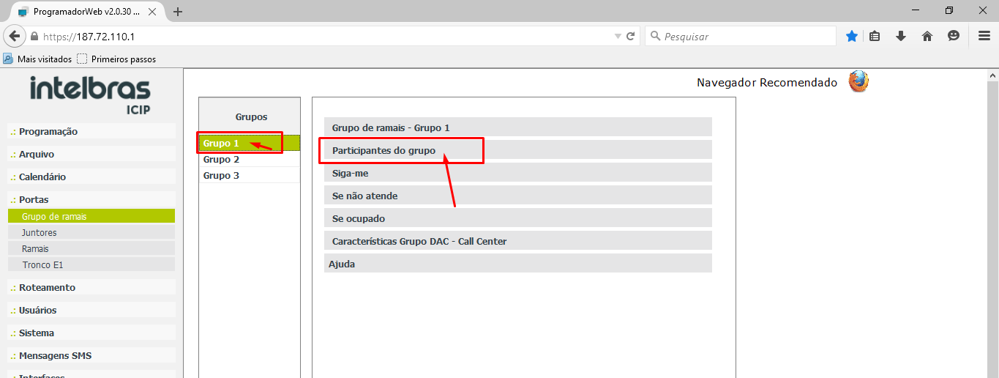
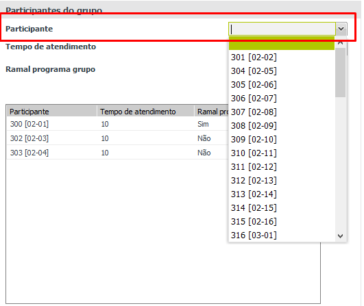
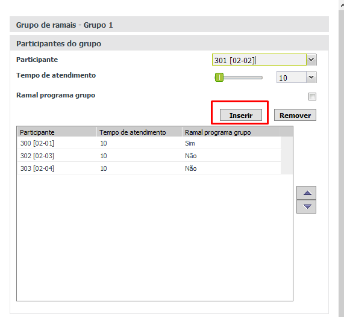
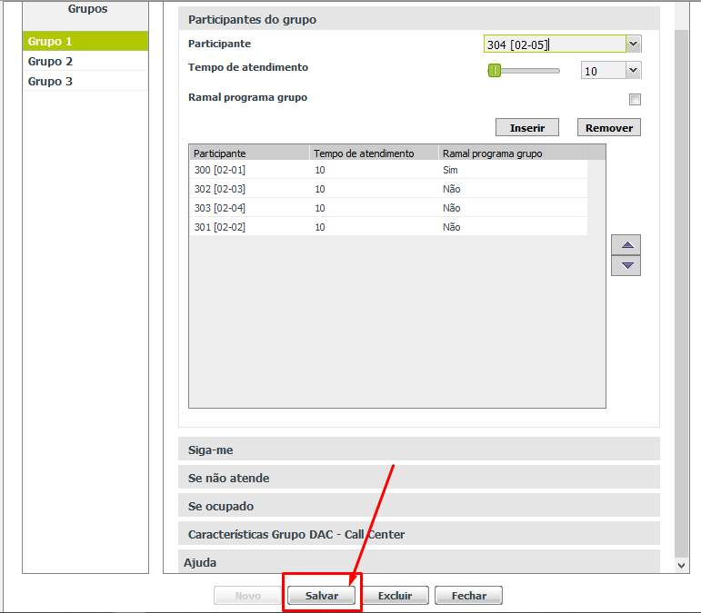
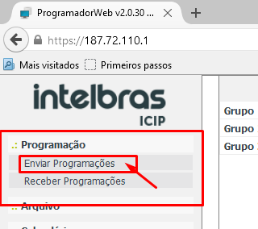
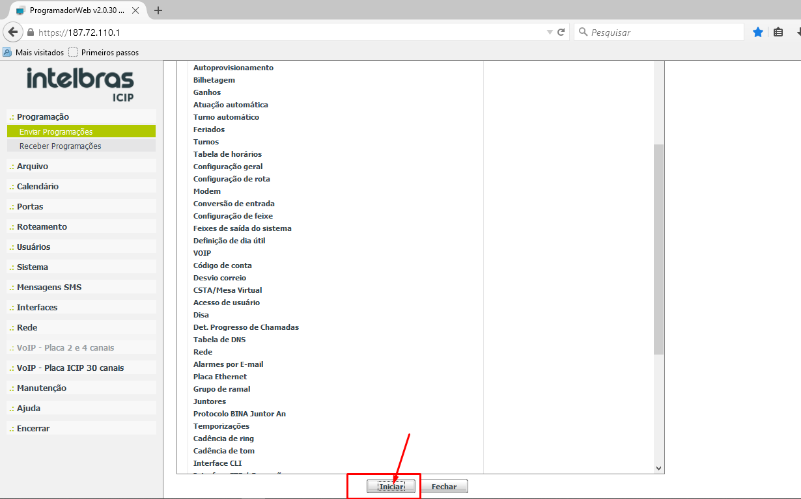

Manual - Inserir Ramal no
Grupo de Ramais
-
1º Passo:
Abrindo acesso ao PABX
NOTA: Para acessar o PABX utilize o navegador Firefox 40.0.
Acesse o PABX, usando o Login e senha disponibilizados Bitwarden ou Procure o seu Gestor.
Após ter os acessos ao PABX. Acesse por meio do IP Externo. Também acesso contém no BitWarden.

-
2º Passo:Iniciando inserção do Ramal.
Após acesso, vá em “Portas”, depois em “Grupo de Ramais”.

-
Agora vai abrir, os grupos de Ramais, selecione o “Grupo” que deseja fazer a inserção do ramal. E depois clique em “Participantes do grupo”.

-
No nosso exemplo, vamos inserir o “Ramal 301” no “Grupo 1”.

-
Clicou em “Participantes do Grupo”, vamos inserir o ramal. Selecione o Ramal na lista suspensa.

-
Após isso. Clique em “Inserir”.

-
Agora vá até o final da página e clique em “Salvar”.

-
3º Passo: Enviar Programação para PABX.
Feito isso vamos enviar a programação para PABX, assim vai estar valendo a modificação feita.
Clique em “Programação”, depois em “Enviar Programações”.

-
Agora vai até o final da página e clique em “Enviar”.
-
Pronto. Agora você inseriu um ramal no Grupo de ramais.